Rasterizester Project
Part 1: Rasterizing Lines
I used Bresenham's algorithm to rasterize lines. In order to rasterize the line, the algorithm needs to decide which pixels lie closest to it. The line will not directly intersect the center of every pixel, so it must be decided which pixels it intersects the most. To do this, it steps through the line, incrementing the x coordinate by one if the overall change in x is greater than the overall change in y, or incrementing the y coordinate if the opposite is true. For this description I will assume we are rasterizing a line dx > dy.
Then the algorithm needs to make a decision about which pixel is closest to the next point on the line. It uses a decision parameter pk. If pk is less than zero, it plots the point (x, y) and increments pk by 2*dy. Otherwise, it plots the point (x, y + 1) or (x, y - 1) depending on if the slope is positive or negative, respectively. It that case it increments pk by 2*dy - 2*dx and continues stepping through the line. The multiplications by two make the algorithm only use integer calculations, which makes it more efficient.
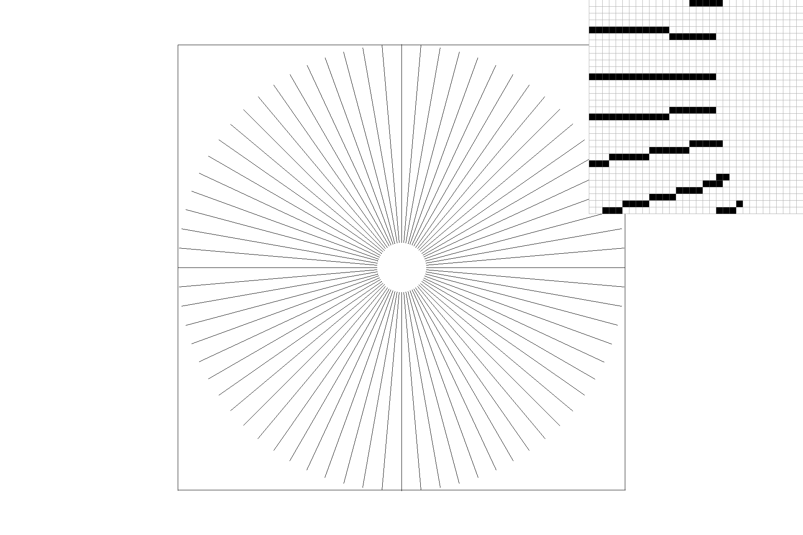
Part 2:Rasterizing Single-Color Triangles
I ended up using two different methods to rasterize triangles. In the first method, I was breaking the triangles into "top flat" and "bottom flat" cases, and then stepping through the triangle and rendering it line by line. After part 5, I ended up switching to using barycentric coordinates to rasterize them. I needed to calculate barycentric coordinates to retrieve the correct color for each pixel, so it made sense to rasterize each pixel individually rather than rasterize a line at a time. Using barycentric coordinates to rasterize triangles also gave a cleaner result.
In the first method I used to rasterize triangles, I broke them into three cases:
- Bottom Flat Triangles
- Top Flat Triangles
- Other
Incrementing the x values and plotting the line:
current_x1 = current_x1 + m1^-1
current_x2 = current_x2 + m2^-1
rasterize_line(current_x1, y, current_x2, y)
Where current_x1 is initialized to the x value of one of the bottom corners and current_x2 is the x value of the other bottom corner. Adding the inverse slope steps the x_values up along the edges of the triangle towards the top vertex. The subroutine to render top flat triangles was done similarly
For the "other" case, I would simply divide the triangle into two seperate triangles: a bottom flat triangle and a top flat triangle. I generated a "fourth" vertex that was directly across from the "middle" vertex, the one with the middle y coordinate.
x4 = x0 + ((y1 - y0)/(y2 - y0) * (x2 - x0))
y4 = y1
Where coordinates are sorted according to ascending y coordinates (so (x0, y0) has the smallest y coordinate and (x2, y2) has the highest y coordinate). Using this new fourth coordinate, I could use my prewritten subroutines to render the original triangle as two seperate triangles, one that was flat on top and the other which was flat on bottom.
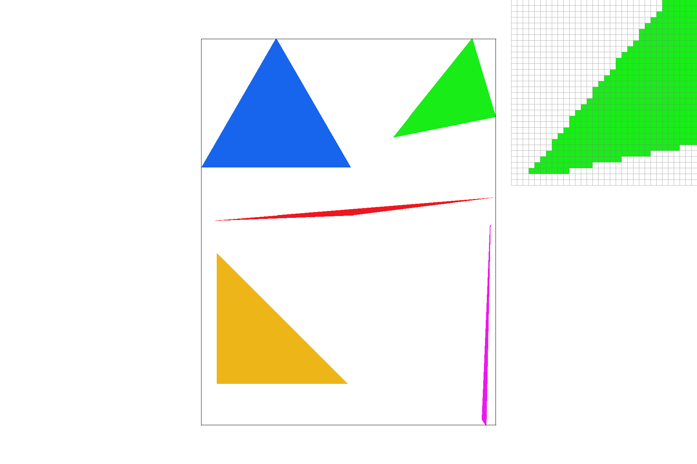Part 3: Antialiasing triangles
Part three was the most challenging for me! First I initialized the super sample buffer as a vector of unsigned chars, simiar to the frame rate buffer, except scaled up based on the sample rate.
total_sample_pts = width * height * sample_rate
superframebuffer.resize(total_sample_pts * 4)
int index = (k*dimension) + 4 *(i + j)Due to the supersamplebuffer storing rgba values for each pixel.
The image is being repeated due to another indexing error when the pixels are drawn into the supersamplebuffer. Once the index was corrected, I got a new result:
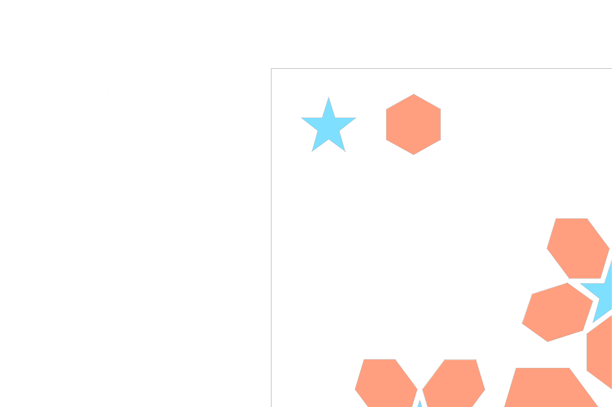Sample_Rate = 4. Image is scaled up larger than it should be and is lighter due to super sample pixel being blended with blank pixels.
The super sample pixel is:
1/sqrt(sample_rate)the size of a frame buffer pixel, so it's color blended with:
(sqrt(sample_rate) - 1)/sqrt(sample_rate)white pixels, giving the lighter, less opaque appearance.
I went through countless other iterations of indexing errors, many of which I can't recreate now. I ended up changing my resolve method to keep track of the x and y coordinate of the current frame buffer pixel. However, just now when trying to recreate another bug, I got my original resolve code to work. Still, my supersamples were getting lighter due to the blending error I described above.
The biggest challenge I had was understanding how to actually anti-alias. At one point I was drawing to the super sample buffer correctly, my resolve method was working mostly correctly (the size of the images stayed consistent among different sample_rates), however there was no anti-aliasing. The jaggies looked the same whether the super_sample_rate was 1 or 16.
Did I need to scale the points by sqrt(sample_rate) in my supersample_point method? Did I need to scale up the triangle according to the sample rate? Or was it both? Between this and the indexing stuff, I was really confusing myself. Thankfully, Ren patiently talked through the idea with me until I understood: I needed to scale one or the other. Either the points or the triangle, but not both.
Scaling the size of the triangle felt more intuitive to me, so that is what I went with. In my void DrawRend::rasterize_triangle() method, I scaled the input coordinates (x0,y0,...,x2,y2) up by a factor of sqrt(sample_rate). Then I repaired my DrawRend::supersample_point(x, y) method so that it stored the true x and y coordinates, as opposed scaling them up as I did before. This allowed (sample_rate) more pixels to be rendered inside the triangle.
Then the resolve method downsampled the pixels back to the resolution of the framebuffer.So colors from a sqrt(sample_rate) X sqrt(sample_rate) square of pixels in the superframebuffer were averaged, and the resulting color was assigned to one corresponding pixel in the frame buffer, giving the final result.
Part 4: Transforms
For part 4, I implemented the transform matrices as shown in the SVG spec. Then I created a new svg file, "first.svg". I grabbed one of the stars shown in another example file and pasted it in my file. Then I made four identical stars and alternated their colors. Next, I put them all in a group that would translate them closer to the center of the page. Finally, I put each star in it's own group with a rotation applied. I incremented each rotation by .25 and added enough stars to make a ring of stars!
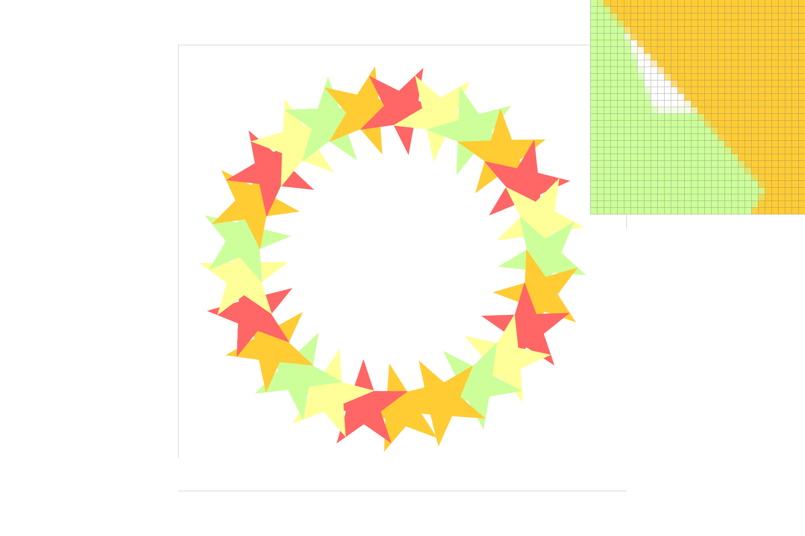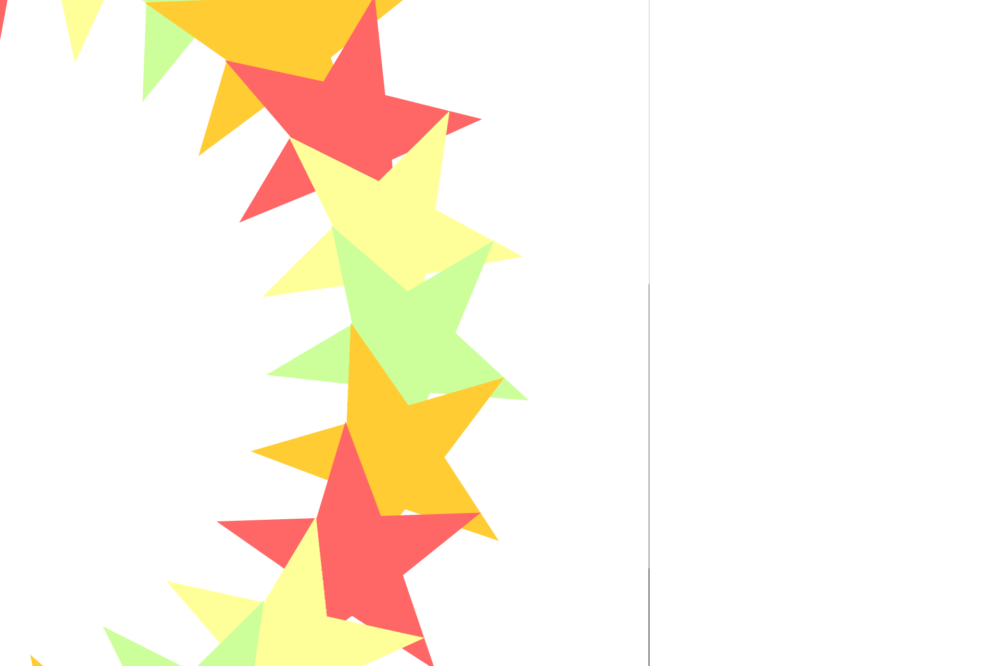
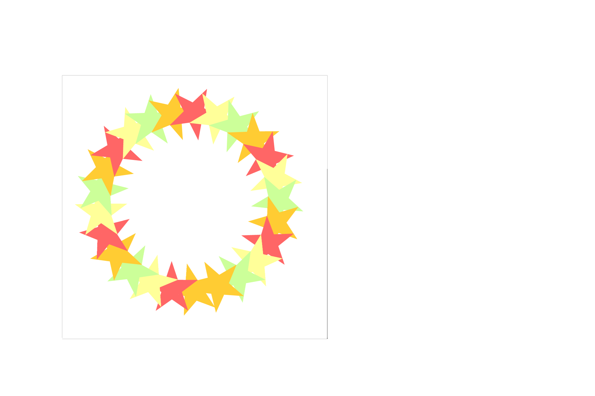
Part 5: Barycentric coordinates
Barycentric coordinates give us a way to assign each vertex in a triangle an attribute, and then linearly interpolate those attributes to assign the appropriate value for the other pixels within the triangle.
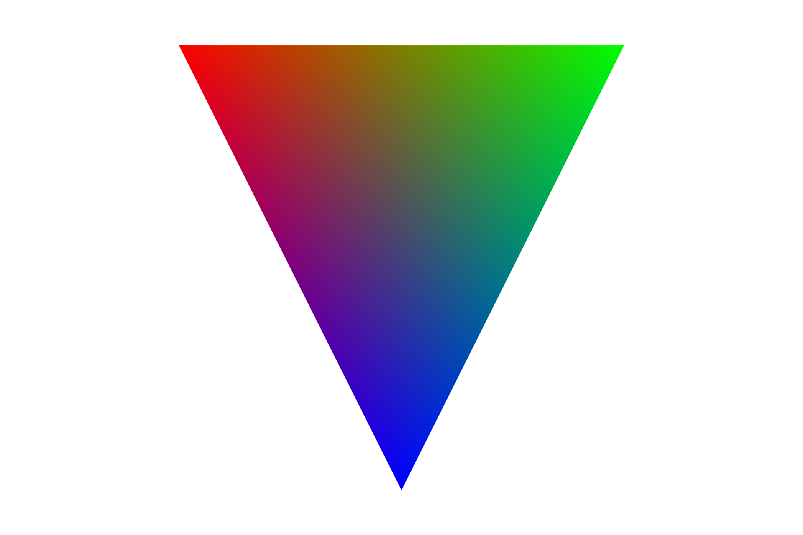In the example above, I will refer to the upper left vertex as R, the upper right vertex as G, and the lowest vertex as B. All of the pixels between these vertices are assigned a color depending on where they are relative to R, G, and B.
Observe the pixels that lie on the edge between R and B. The pixels closest to R are all red, and the pixels closest to B are all blue. However, the pixels right in the middle of the edge are a purple shade, since they lie directly between the red and blue vertices. The pixel that lies exactly in the center of the two vertices gets:
.5*color(B) + .5*color(R) + 0*color(G)The number that is multiplied by the color of each vertex is either alpha, beta, or gamma. Each one represents the relative distance from the pixel to one of the three triangle vertices. In the above example, alpha and beta are 0.5, since the pixel is halfway between the red and blue pixels. Gamma is zero since it is relatively far away. To implement this in my program, I first calculate the alpha, beta, and gamma barycentric coordinates using the coordinates passed into <DrawRend::render_barycentric_triangle(). Then, these are passed to ColorTri::color(). This method then multiplies alpha by the "a" vertex color, beta by the "b" vertex color, and gamma = (1 - alpha - beta) by the "c" vertex co
Part 6: Pixel sampling for texture mapping
Finding the UV Texture Coordinates
Implementing part 6 was very similar to part 5. The same way I used barycentric coordinates to interpolate the colors of three vertices of a triangle for the pixels in the triangle, I could map a coordinate inside a triangle to its corresponding uv texture coordinate. In Color TexTri::color(Vector2D xy, Vector2D dx, Vector2D dy, SampleParams sp) , I multiply alpha by the "a" vertex's uv coordinate vector, beta by the "b" coordinate uv vector, and gamma by the "c" coordinate uv vector.
Retrieving the Color from the MipMap
Once I had adjusted the uv vector, it is passed into Texture::sample(const SampleParams &sp), which then calls the appropriate sampling method according to the sp.psm parameter. The sampling method retreives the level 0 mip map (for this portion). The uv coordinates are between 0 and 1, so the sampling method then scales them up to match the proportions of the mipmap.x = uv.x * mipmap.widthThen, the color of the pixel is retrieved from the mipmap.
y = uv.y * mipmap*height
return MipMapPixelColor(x, y, level)
Nearest vs Bilinear Sampling
The nearest level sampling method simply returns the color of the pixel as above. The Bilinear method returns an interpolation of the four nearest uv coordinates. I used the algorithm in the book to implement bilinear sampling. The difference between nearest and bilinear sampling is the most apparent in the map sample images, which have distinct thin vertical lines through them. 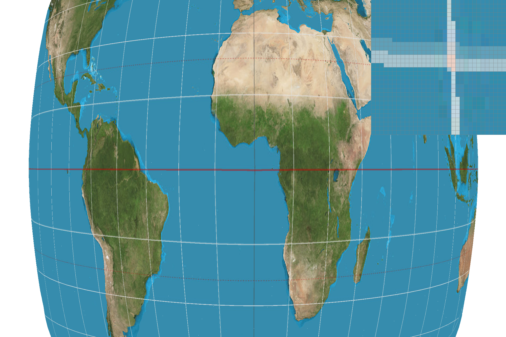Jaggies! Blegh!
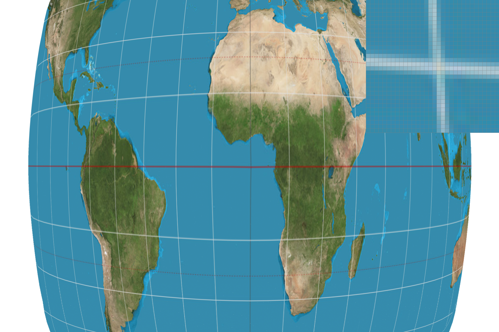
SoooOossosoSo smooth <3
Even with a high sample rate, the difference between the two methods is apparent on these images.
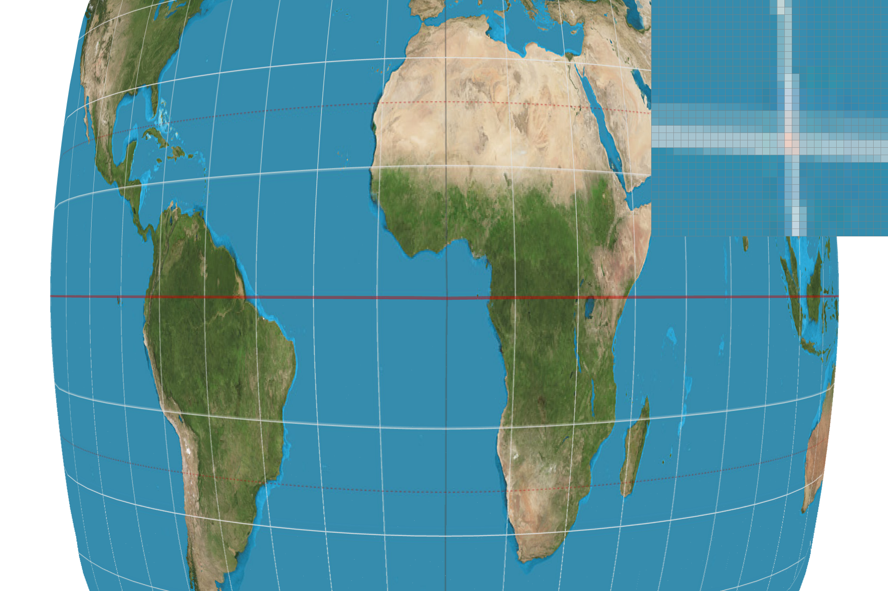
Gross! Blurry Jaggies!
Ridiculously good looking.
However, without these distinct lines, the effect is much less noticeable. In the campanille image, I actually prefer the nearest sampling method. The features of the image seem slightly better with the nearest sampling.
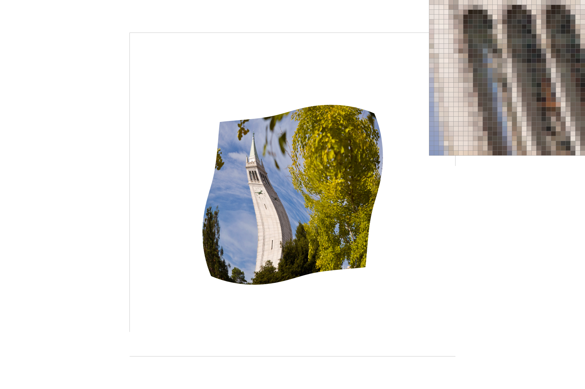Looks pretty nice.
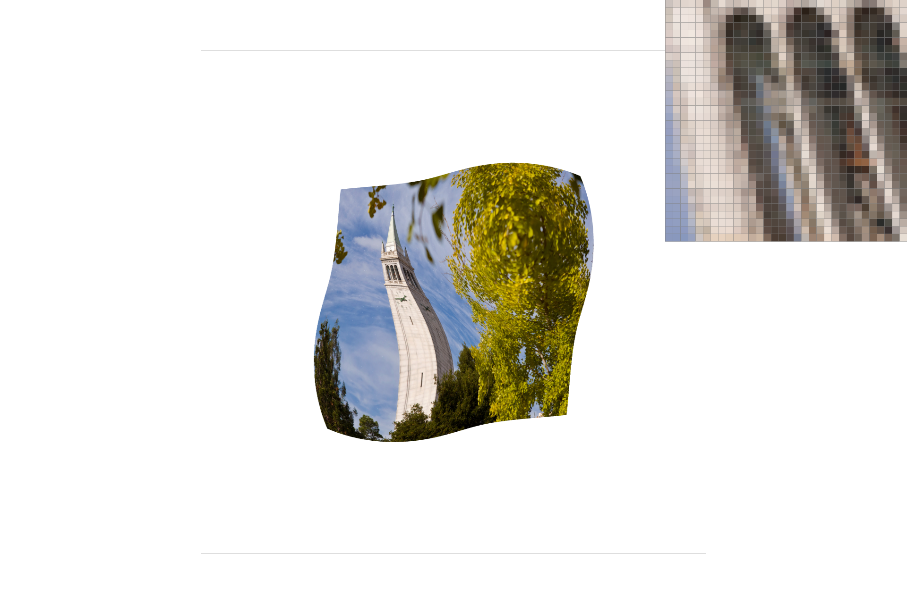
Initially when retrieving the mip map colors, I had a bug because I wasn't dividing my colors by 255. Thanks to piazza, I knew I had to divide them by 255 since the color was expecting a float between 0 and 1. However at first that was just giving me black images. Then I realized I literally had to divide it by "255." to prevent a precision error.
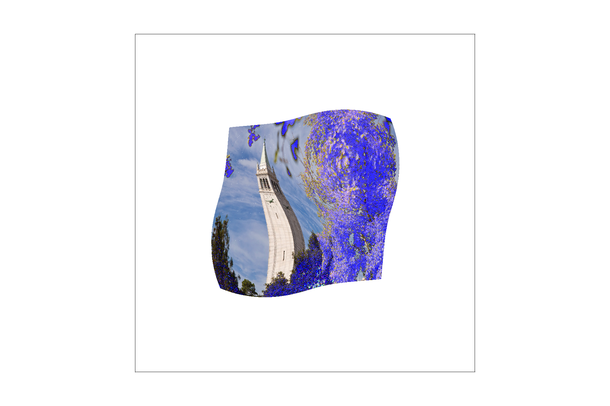
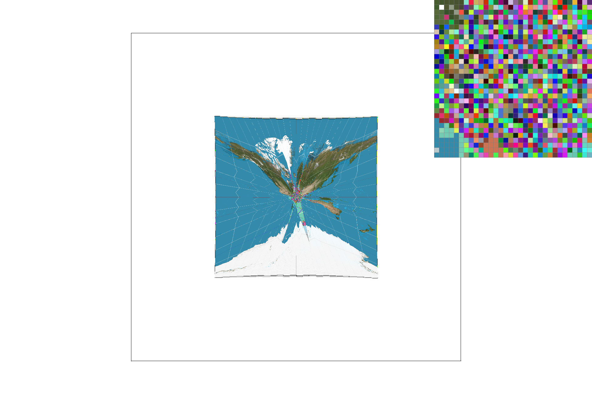
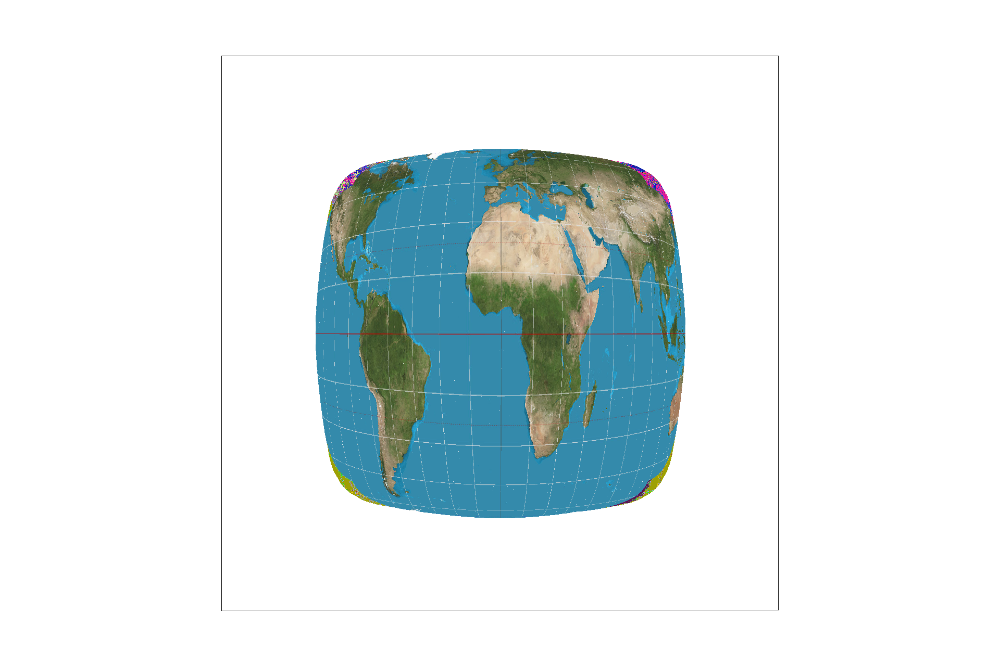
Part 7: Level sampling with mipmaps for texture mapping
In the final part, I implemented the "get level" method using the math described in the textbook. This allows the texture sampling to grab different mip maps for each pixel, depending on which is most appropriate. Sometimes the effects are desirable, and other times it ends up blurring the image.
In trilinear sampling, the color from the getLevel() mipMap and the color from the adjacent level are blended to give the resulting color.
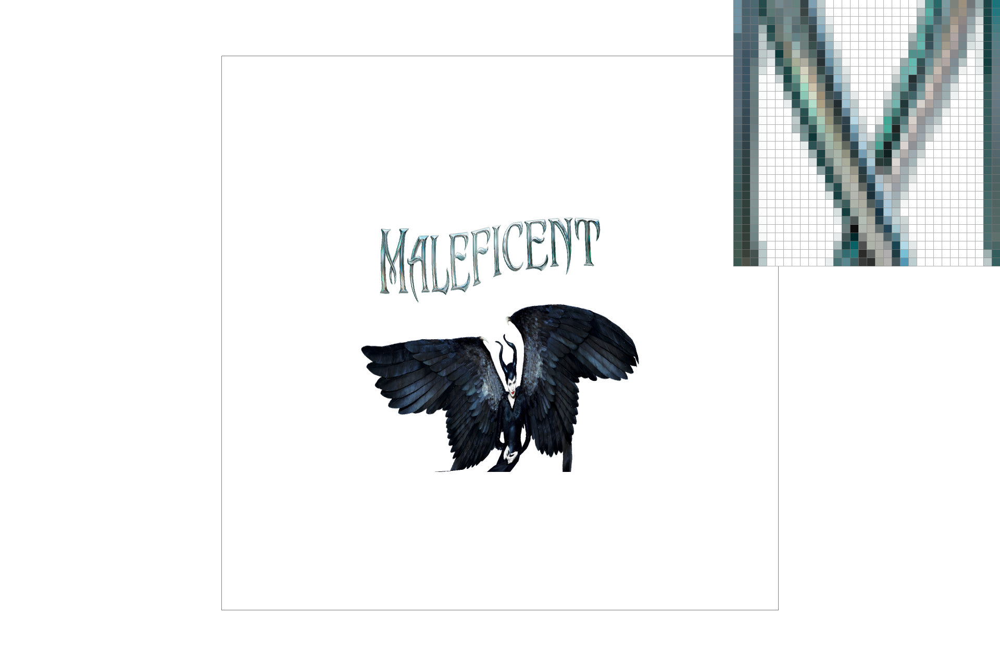
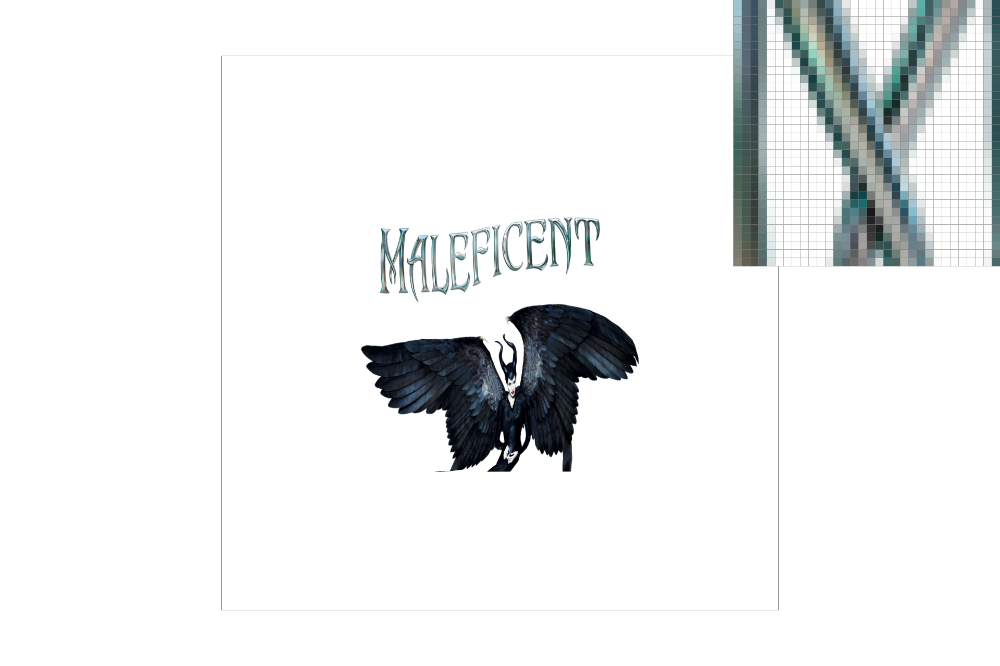
I thought the above combination, Level Zero with Linear Sampling, gave the best result. It is the only one that eliminates the Jaggies in the "Maleficent" chrome text.
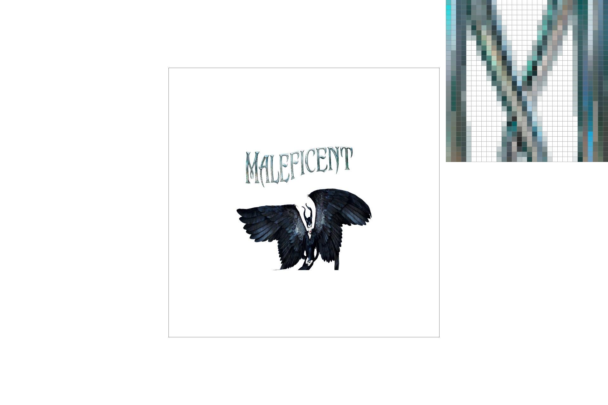
For closer images, there was visable blurring when using the trilinear sampling met
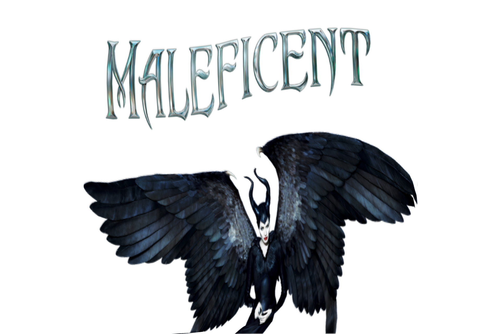
Observe the blurring in Maleficent's face.
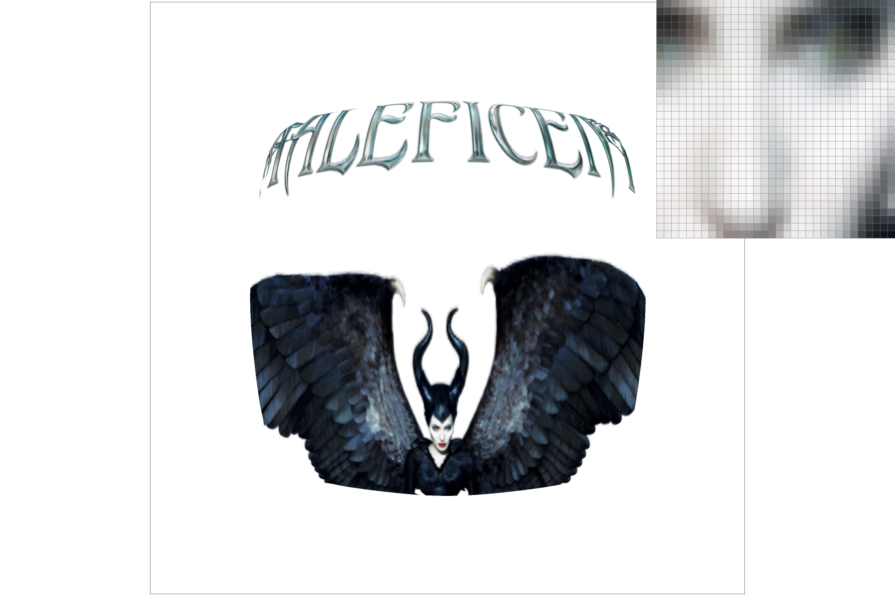
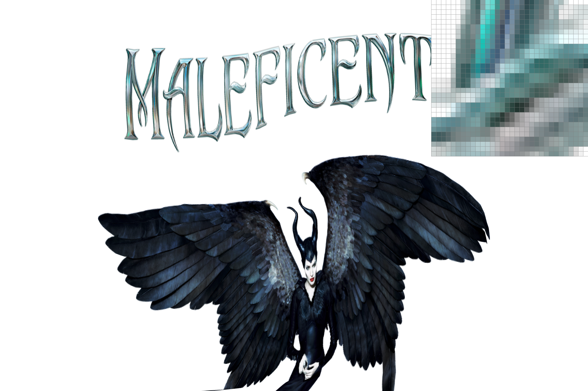
I felt this was the best result for this image.
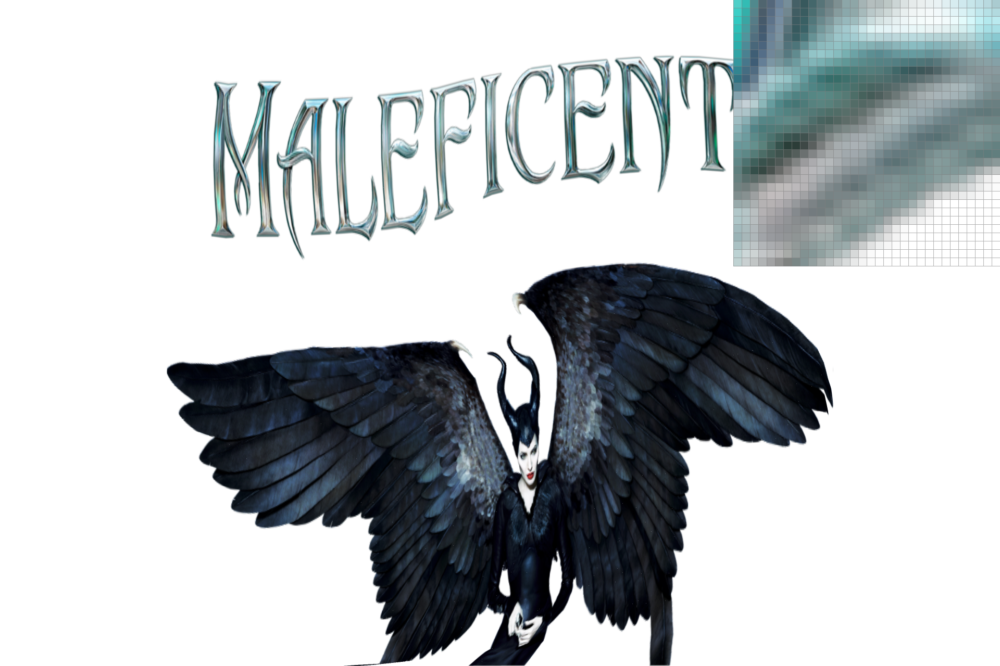
The jaggies are less apparent in the writing, but Maleficent is a little more blurry.